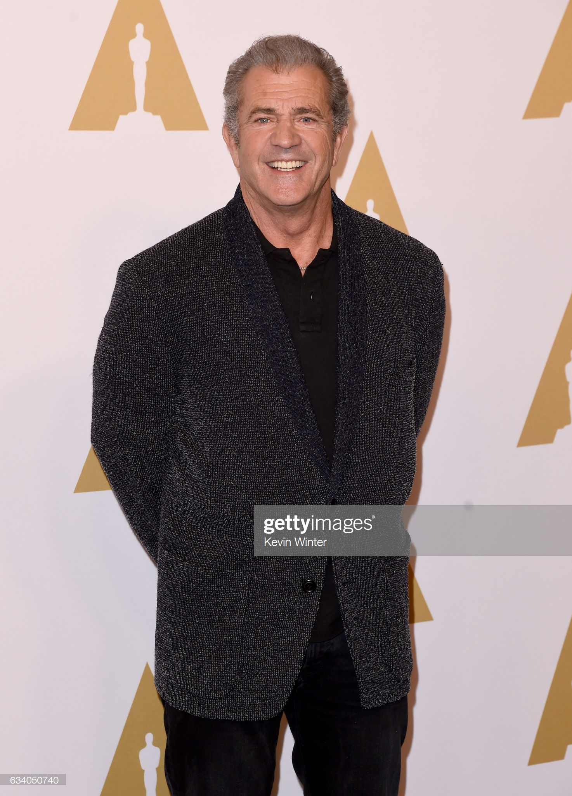
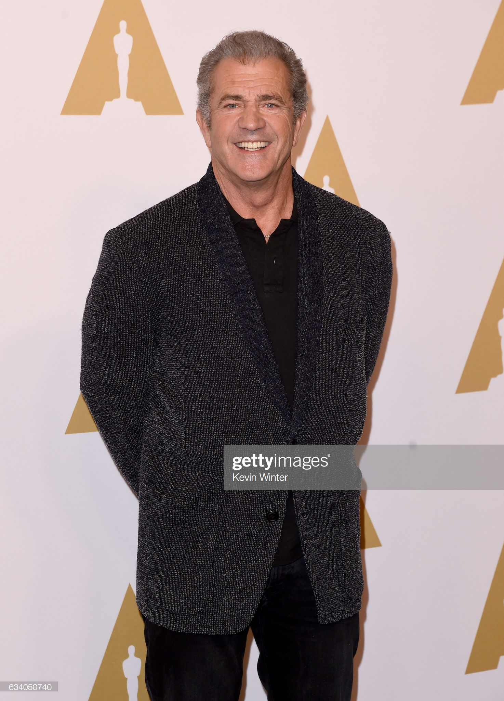

have you seen the passion?
leave if you dont like mel gibson
this is the official website of the Mel Gibson Fanclub
Welcome to The MEl Gibson Unofficial official fan site made by his fans for him and his fans.
 



Mel Colmcille Gerard Gibson AO (born January 3, 1956)[2] is an American actor and filmmaker. He is best known for his action hero roles, particularly his breakout role as Max Rockatansky in the first three films of the post-apocalyptic action series Mad Max and as Martin Riggs in the buddy cop film series Lethal Weapon. Born in Peekskill, New York, Gibson moved with his parents to Sydney, Australia, when he was 12 years old. He studied acting at the National Institute of Dramatic Art, where he starred opposite Judy Davis in a production of Romeo and Juliet. During the 1980s, he founded Icon Entertainment, a production company, which independent film director Atom Egoyan has called "an alternative to the studio system".[3] Director Peter Weir cast him as one of the leads in the World War I drama Gallipoli (1981), which earned Gibson a Best Actor Award from the Australian Film Institute,[4] as well as a reputation as a serious, versatile actor. In 1995, Gibson produced, directed, and starred in Braveheart, a historical epic, for which he won the Golden Globe Award for Best Director, the Academy Award for Best Director, and the Academy Award for Best Picture. He later directed and produced The Passion of the Christ, a biblical drama that was both financially successful and highly controversial. He received further critical notice for his directorial work of the action-adventure film Apocalypto (2006), which is set in Mesoamerica during the early 16th century. After several legal issues and controversial statements leaked to the public, Gibson's public image plummeted significantly, affecting his careers in acting and directing.[5] His career began seeing resurgence with his performance in Jodie Foster's The Beaver (2011), and his directorial comeback after an absence of 10 years, Hacksaw Ridge (2016), which won two Academy Awards[6][7] and was nominated for another four, including Best Picture and Best Director for Gibson, his second nomination in the category. Contents 1 Early life 2 Career 2.1 Overview 2.2 Stage 2.3 Australian television and cinema 2.4 Hollywood 2.5 Producer 2.6 Director 3 Film work 3.1 Mad Max series 3.2 Gallipoli 3.3 The Year of Living Dangerously 3.4 The Bounty 3.5 Lethal Weapon series 3.6 Hamlet 3.7 Braveheart 3.8 The Passion of the Christ 3.9 Apocalypto 3.10 The Beaver 3.11 Hacksaw Ridge 4 Prospective films 5 Personal life 5.1 Relationships 5.2 Investments 5.3 Prankster 5.4 Philanthropy 5.5 Religious and political views 5.6 Alcohol abuse and legal issues 6 Controversies 7 Theatre credits 8 Awards and honors 9 References 10 External links Early life Gibson was born in Peekskill, New York, the sixth of eleven children, and the second son of Hutton Gibson, a writer, and Irish-born Anne Patricia (née Reilly, died 1990).[8][9] Gibson's paternal grandmother was opera contralto Eva Mylott (1875–1920), who was born in Australia, to Irish parents,[10] while his paternal grandfather, John Hutton Gibson, was a millionaire tobacco businessman from the American South.[11][12] One of Gibson's younger brothers, Donal, is also an actor. Gibson's first name is derived from Saint Mel, fifth-century Irish saint, and founder of Gibson's mother's native diocese, Ardagh, while his second name, Colmcille,[13] is also shared by an Irish saint[14] and is the name of the Aughnacliffe parish in County Longford where Gibson's mother was born and raised. Because of his mother, Gibson retains dual Irish and American citizenship.[15] Gibson is also an Australian permanent resident.[16][17] Gibson's father was awarded US$145,000 in a work-related-injury lawsuit against the New York Central Railroad on February 14, 1968, and soon afterwards relocated his family to West Pymble, Sydney, Australia.[18] Mel was twelve years old at the time. The move to his grandmother's native Australia was for economic reasons, and his father's expectation that the Australian Defence Forces would reject his eldest son for the draft during the Vietnam War.[19] Gibson was educated by members of the Congregation of Christian Brothers at St Leo's Catholic College in Wahroonga, New South Wales, during his high school years.[20][21] Career Overview Gibson gained very favorable notices from film critics when he first entered the cinematic scene, as well as comparisons to several classic movie stars. In 1982, Vincent Canby wrote that "Mr. Gibson recalls the young Steve McQueen... I can't define 'star quality,' but whatever it is, Mr. Gibson has it."[22] Gibson has also been likened to "a combination Clark Gable and Humphrey Bogart."[23] Gibson's roles in the Mad Max series of films, Peter Weir's Gallipoli (1981), and the Lethal Weapon series of films earned him the label of "action hero".[24] Later, Gibson expanded into a variety of acting projects including human dramas such as the Franco Zeffirelli film version of Hamlet (1990), and comedic roles such as those in Maverick (1994) and What Women Want (2000). He expanded beyond acting into directing and producing, with: The Man Without a Face (1993), Braveheart (1995), The Passion of the Christ (2004), and Apocalypto (2006). Jess Cagle of Time compared Gibson with Cary Grant, Sean Connery, and Robert Redford.[24] Connery once suggested Gibson should play the next James Bond to Connery's "M". Gibson turned down the role, reportedly because he feared being typecast.[25] Stage Gibson studied at the National Institute of Dramatic Art (NIDA) in Sydney. The students at NIDA were classically trained in the British-theater tradition rather than in preparation for screen acting.[26] As students, Gibson and actress Judy Davis played the leads in Romeo and Juliet, and Gibson played the role of Queen Titania in an experimental production of A Midsummer Night's Dream.[27] After graduation in 1977,[28] Gibson immediately began work on the filming of Mad Max, but continued to work as a stage actor, and joined the State Theatre Company of South Australia in Adelaide. Gibson's theatrical credits include the character Estragon (opposite Geoffrey Rush) in Waiting for Godot, and the role of Biff Loman in a 1982 production of Death of a Salesman in Sydney. Gibson's most recent theatrical performance, opposite Sissy Spacek, was the 1993 production of Love Letters by A. R. Gurney, in Telluride, Colorado.[29] Australian television and cinema While a student at NIDA, Gibson made his film debut in the 1977 film Summer City, for which he was paid $400.[30] Gibson then played the title character in the film Mad Max (1979). He was paid $15,000 for this role.[30] Shortly after making the film he did a season with the South Australian Theatre Company. During this period he shared a $30 a week apartment in Adelaide with his future wife Robyn. After Mad Max, Gibson also played a mentally slow youth in the film Tim (also 1979).[31] During this period Gibson also appeared in Australian television series guest roles. He appeared in serial The Sullivans as naval lieutenant Ray Henderson,[32] in police procedural Cop Shop,[31] and in the pilot episode of prison serial Punishment which was produced in 1980, screened 1981.[33][34] Gibson joined the cast of the World War II action film Attack Force Z, which was not released until 1982 when Gibson had become a bigger star. Director Peter Weir cast Gibson as one of the leads in the World War I drama Gallipoli (1981), which earned Gibson another Best Actor Award from the Australian Film Institute.[4] Gallipoli also helped to earn Gibson the reputation of a serious, versatile actor and gained him the Hollywood agent Ed Limato. The sequel Mad Max 2 (1982) was his first hit in America, where it was released as The Road Warrior. Gibson again received positive notices for his role in Peter Weir's romantic thriller The Year of Living Dangerously (1982). Following a one-year hiatus from film acting after the birth of his twin sons, Gibson took on the role of Fletcher Christian in The Bounty (1984). Gibson earned his first million dollar salary for playing Max Rockatansky for the third time, in Mad Max Beyond Thunderdome (1985).[35][36] Hollywood Mel Gibson in 1990 at an Air America premiere. Early Hollywood years Mel Gibson's first American film was Mark Rydell's drama The River (1984), in which he and Sissy Spacek played struggling Tennessee farmers. Gibson then starred in the Gothic romance Mrs. Soffel (also 1984) for Australian director Gillian Armstrong. He and Matthew Modine played condemned convict brothers opposite Diane Keaton as the warden's wife who visits them to read the Bible. In 1985, after working on four films in a row, Gibson took almost two years off at his Australian cattle station.[37] He returned to play the role of Martin Riggs in Lethal Weapon (1987), a film which helped to cement his status as a Hollywood "leading man".[38] Gibson's next film was Robert Towne's Tequila Sunrise (1988), followed by Lethal Weapon 2 (1989). Gibson next starred in three films back-to-back, all released in 1990: Bird on a Wire, Air America, and Hamlet. 1990s During the 1990s, Gibson alternated between commercial and personal projects. His films in the first half of the decade were Forever Young, Lethal Weapon 3, Maverick, and Braveheart. He then starred in Ransom, Conspiracy Theory, Lethal Weapon 4, and Payback. Gibson also served as the speaking and singing voice of John Smith in Disney's Pocahontas. After 2000 In 2000, Gibson acted in three films that each grossed over $100 million: The Patriot, Chicken Run, and What Women Want.[24] In 2002, Gibson appeared in the Vietnam War drama We Were Soldiers and M. Night Shyamalan's Signs, which became the highest-grossing film of Gibson's acting career.[39] While promoting Signs, Gibson said that he no longer wanted to be a movie star and would only act in film again if the script were truly extraordinary. In 2010, Gibson appeared in Edge of Darkness, which marked his first starring role since 2002[40] and was an adaptation of the BBC miniseries, Edge of Darkness.[41] In 2010, following an outburst at his ex-girlfriend that was made public, Gibson was dropped from the talent agency of William Morris Endeavor.[42] Gibson most recently played two villains: Voz in Machete Kills in 2013, opposite Danny Trejo, and Conrad Stonebanks in The Expendables 3 opposite Sylvester Stallone in 2014. On February 1, 2017, Variety confirmed that Gibson had been cast in the lead role of director S. Craig Zahler's police brutality themed film Dragged Across Concrete.[43] Producer Main article: Icon Productions After his success in Hollywood with the Lethal Weapon series, Gibson began to move into producing and directing. With partner Bruce Davey, Gibson formed Icon Productions in 1989 in order to make Hamlet.[44] In addition to producing or co-producing many of Gibson's own star vehicles, Icon has turned out many other small films, ranging from Immortal Beloved to An Ideal Husband. Gibson has taken supporting roles in some of these films, such as The Million Dollar Hotel and The Singing Detective. Gibson has also produced a number of projects for television, including a biopic on The Three Stooges and the 2008 PBS documentary Carrier. Icon has grown from being just a production company to also be an international distribution company and film exhibitor in Australia and New Zealand.[45] In June 2010, Gibson was in Brownsville, Texas, filming scenes for the movie, How I Spent My Summer Vacation, about a career criminal put in a tough prison in Mexico.[46] In October 2010, it was reported[by whom?] that Gibson would have a small role in The Hangover: Part II,[47] but he was removed from the film after the cast and crew objected to his involvement.[48] Director Mel Gibson has credited his directors, particularly George Miller, Peter Weir, and Richard Donner, with teaching him the craft of filmmaking and influencing him as a director. According to Robert Downey, Jr., studio executives encouraged Gibson in 1989 to try directing, an idea he rebuffed at the time.[49] Gibson made his directorial debut in 1993 with The Man Without a Face, followed two years later by Braveheart, which earned Gibson the Academy Award for Best Director. Gibson had long planned to direct a remake of Fahrenheit 451, but in 1999 the project was indefinitely postponed because of scheduling conflicts.[50] Gibson was scheduled to direct Robert Downey, Jr. in a Los Angeles stage production of Hamlet in January 2001, but Downey's drug relapse ended the project.[51] In 2002, while promoting We Were Soldiers and Signs to the press, Gibson mentioned that he was planning to pare back on acting and return to directing.[52] In September 2002, Gibson announced that he would direct a film called The Passion in Aramaic and Latin with no subtitles because he hoped to "transcend language barriers with filmic storytelling."[53] In 2004, he released the controversial film The Passion of the Christ, with subtitles, which he co-wrote, co-produced, and directed. The film went on to become the highest grossing rated R film of all time with $370,782,930 in U.S. box office sales.[54] Gibson directed a few episodes of Complete Savages for the ABC network. In 2006, he directed the action-adventure film Apocalypto, his second film to feature sparse dialogue in a non-English language. In November 2016, film critic Matt Zoller Seitz named Gibson as "the pre-eminent religious filmmaker in the United States".[55] Film work Main article: Mel Gibson filmography Gibson's screen acting career began in 1976, with a role on the Australian television series The Sullivans. In his career, Gibson has appeared in 43 films, including the Mad Max and Lethal Weapon film series. In addition to acting, Gibson has also directed four films, including Braveheart and The Passion of the Christ; produced 11 films; and written two films. Films either starring or directed by Mel Gibson have earned over US$2.5 billion, in the United States alone.[56][57] Gibson's filmography includes television series, feature films, television films, and animated films. Mad Max series Main article: Mad Max (franchise) Gibson got his breakthrough role as the leather-clad post-apocalyptic survivor in George Miller's Mad Max. The independently financed blockbuster helped to make him an international star. In the United States, the actors' Australian accents were dubbed with American accents.[58] The original film spawned two sequels: Mad Max 2 (known in North America as The Road Warrior), and Mad Max 3 (known in North America as Mad Max Beyond Thunderdome). A fourth movie, Mad Max: Fury Road (2015), was made with Tom Hardy in the title role.[59] Gallipoli Main article: Gallipoli (1981 film) The 1981 Peter Weir film Gallipoli is about a group of young men from rural Western Australia who enlist in the Australian Imperial Force during World War I. They are sent to invade the Ottoman Empire, where they take part in the 1915 Gallipoli Campaign. During the course of the movie, the young men slowly lose their innocence about the war. The climax of the movie centers on the catastrophic AIF offensive known as the Battle of the Nek. Peter Weir cast Gibson in the role of Frank Dunne, an Irish-Australian drifter with an intense cynicism about fighting for the British Empire. Newcomer Mark Lee was recruited to play the idealistic Archy Hamilton after participating in a photo session for the director. Gibson later recalled: I'd auditioned for an earlier film and he told me right up front, "I'm not going to cast you for this part. You're not old enough. But thanks for coming in, I just wanted to meet you." He told me he wanted me for Gallipoli a couple of years later because I wasn't the archetypal Australian. He had Mark Lee, the angelic-looking, ideal Australian kid, and he wanted something of a modern sensibility. He thought the audience needed someone to relate to of their own time.[60] Gibson later said that Gallipoli is, "Not really a war movie. That's just the backdrop. It's really the story of two young men." The critically acclaimed film helped to further launch Gibson's career.[61][62] He won the award for Best Actor in a Leading Role from the Australian Film Institute.[4] The Year of Living Dangerously Main article: The Year of Living Dangerously (film) Gibson played a naïve but ambitious journalist opposite Sigourney Weaver and Linda Hunt in Peter Weir's atmospheric 1982 film The Year of Living Dangerously, based on the novel of the same name by Christopher Koch. The movie was both a critical and commercial success, and the upcoming Australian actor was heavily marketed by MGM studio. In his review of the film, Vincent Canby of The New York Times wrote, "If this film doesn't make an international star of Mr. Gibson, then nothing will. He possesses both the necessary talent and the screen presence."[63] According to John Hiscock of The Daily Telegraph, the film did, indeed, establish Gibson as an international talent.[64] Gibson was initially reluctant to accept the role of Guy Hamilton. "I didn't necessarily see my role as a great challenge. My character was, like the film suggests, a puppet. And I went with that. It wasn't some star thing, even though they advertised it that way."[65] Gibson saw some similarities between himself and the character of Guy. "He's not a silver-tongued devil. He's kind of immature and he has some rough edges and I guess you could say the same for me."[23] The Bounty Main article: The Bounty (1984 film) Gibson followed the footsteps of Errol Flynn, Clark Gable, and Marlon Brando by starring as Fletcher Christian in a cinematic retelling of the Mutiny on the Bounty. The resulting 1984 film The Bounty is considered to be the most historically accurate version. However, Gibson has expressed a belief that the film's revisionism did not go far enough. He has stated that his character should have been portrayed as the film's antagonist. He has further praised Anthony Hopkins's performance as Lieutenant William Bligh as the best aspect of the film.[65] Lethal Weapon series Main article: Lethal Weapon (film series) Gibson moved into more mainstream commercial filmmaking with the popular action comedy series Lethal Weapon, which began with the 1987 original. In the films he played LAPD Detective Martin Riggs, a recently widowed Vietnam veteran with a death wish and a penchant for violence and gunplay. In the films, he is partnered with a reserved family man named Roger Murtaugh (Danny Glover) and starting with the second film, they're joined by a hyperactive informant named Leo Getz (Joe Pesci). Following the success of Lethal Weapon, director Richard Donner and principal cast revisited the characters in three sequels, Lethal Weapon 2 (1989), Lethal Weapon 3 (1993), and Lethal Weapon 4 (1998). With its fourth installment, the Lethal Weapon series embodied "the quintessence of the buddy cop pic".[66] The film series has since been rebooted with a television adaptation, currently airing on FOX. Hamlet Main article: Hamlet (1990 film) Gibson made the unusual transition from action to classical drama, playing William Shakespeare's Danish prince in Franco Zeffirelli's Hamlet. Gibson was cast alongside experienced Shakespearean actors Ian Holm, Alan Bates, and Paul Scofield. He compared working with Scofield to being "thrown into the ring with Mike Tyson".[67] Scofield said of Gibson "Not the sort of actor you'd think would make an ideal Hamlet, but he had enormous integrity and intelligence."[68] Braveheart Main article: Braveheart In 1995, Mel Gibson directed, produced, and starred in Braveheart, a biographical film of Sir William Wallace, a Scottish nationalist who was executed in 1305 for "high treason" against King Edward I of England. Gibson received two Academy Awards, Best Director and Best Picture, for his second directorial effort. In winning the Academy Award for Best Director, Gibson became only the sixth actor-turned-filmmaker to do so.[69] Braveheart influenced the Scottish nationalist movement and helped to revive the film genre of the historical epic; the Battle of Stirling Bridge sequence is considered by critics to be one of the all-time-best-directed battle scenes.[70] The film's depiction of the Prince of Wales as an effeminate homosexual caused the film to be attacked by the Gay Alliance. The Gay Alliance was especially enraged by a scene in which King Edward I murders his son's male lover by throwing him out of a castle window. Gibson, who had previously been reported making several homophobic statements,[71] now replied, "The fact that King Edward throws this character out a window has nothing to do with him being gay ... He's terrible to his son, to everybody."[72] Gibson asserted that the reason that King Edward I kills his son's lover is because the king is a "psychopath".[73] Gibson also expressed bewilderment that some filmgoers laughed at this murder: We cut a scene out, unfortunately ... where you really got to know that character (Edward II) and to understand his plight and his pain... But it just stopped the film in the first act so much that you thought, 'When's this story going to start?'[74] The Passion of the Christ Main article: The Passion of the Christ Gibson directed, produced, co-wrote, and funded the film The Passion of the Christ (2004), which chronicled the passion and death of Jesus (Jim Caviezel). The film was shot exclusively in Aramaic, Latin, and Hebrew. Although Gibson originally intended to release the film without subtitles; he eventually relented for theatrical exhibition. The film sparked divergent reviews, ranging from high praise to criticism of the violence. The Anti-Defamation League accused Gibson of anti-semitism over the film's unflattering depiction of Caiaphas and the Sanhedrin. In The Nation, reviewer Katha Pollitt said, "Gibson has violated just about every precept of the (United States Conference of Catholic Bishops) conference's own 1988 'Criteria' for the portrayal of Jews in dramatizations of the Passion (no bloodthirsty Jews, no rabble, no use of Scripture that reinforces negative stereotypes of Jews, etc.) ... The priests have big noses and gnarly faces, lumpish bodies, yellow teeth; Herod Antipas and his court are a bizarre collection of oily-haired, epicene perverts. The 'good Jews' look like Italian movie stars (Magdalene actually is an Italian movie star, the lovely Monica Bellucci); Mary, who would have been around 50 and appeared 70, could pass for a ripe 35."[75] Among those to defend Gibson were Orthodox Jewish Rabbi Daniel Lapin and radio personality Michael Medved.[citation needed] Referring to ADL National Director Abraham Foxman, Rabbi Lapin said that by calling The Passion of the Christ anti-Semitic, "what he is saying is that the only way (for Christians) to escape the wrath of Foxman is to repudiate (their own) faith."[citation needed] In an interview with The Globe and Mail, Gibson stated, "If anyone has distorted Gospel passages to rationalize cruelty towards Jews or anyone, it's in defiance of repeated Papal condemnation. The Papacy has condemned racism in any form... Jesus died for the sins of all times, and I'll be the first on the line for culpability".[76] Eventually, the continued media attacks began to anger Gibson. After his father's Holocaust denial was sharply criticized in print by The New York Times writer Frank Rich,[77] Gibson retorted, "I want to kill him. I want his intestines on a stick.... I want to kill his dog."[78][79] Gibson's Traditionalist Catholic upbringing was also the target of criticism. In a 2006 interview with Diane Sawyer, Gibson stated that he feels that his "human rights were violated" by the often vitriolic attacks on his person, his family, and his religious beliefs which were sparked by The Passion.[80] The film grossed US$611,899,420 worldwide and $370,782,930 in the US alone,[81] surpassing any motion picture starring Gibson.[82] In US box offices, it became the seventh (at the time) highest-grossing film in history[83] and the highest-grossing rated R film of all time.[84] The film was nominated for three Academy Awards[85] and won the People's Choice Award for Favorite Dramatic Motion Picture.[86] Apocalypto Main article: Apocalypto Gibson received further critical acclaim for his directing of the 2006 action-adventure film Apocalypto.[87] Gibson's fourth directorial effort is set in Mesoamerica during the early 16th century against the turbulent end times of a Maya civilization. The sparse dialogue is spoken in the Yucatec Maya language by a cast of Native American descent.[88][89] Gibson himself has stated that the film is an attempt at making a deliberate point about great civilizations and what causes them to decline and disintegrate. Gibson said, "People think that modern man is so enlightened, but we're susceptible to the same forces – and we are also capable of the same heroism and transcendence."[90][91] This theme is further explored by a quote from Will Durant, which is superimposed at the very beginning of the film: "A great civilization is not conquered from without until it has destroyed itself from within." The Beaver Gibson starred in The Beaver, a domestic drama about a depressed alcoholic directed by former Maverick co-star Jodie Foster.[92] The Beaver premiered at The South by Southwest Festival in Austin, TX on March 16, 2011. The opening weekend in 22 theaters was considered a flop: it made $104,000 which comes to a per-theater average of $4,745.[93] The film's distributor, Summit Entertainment, had originally planned for a wide release of The Beaver for the weekend of May 20, but after the initial box-office returns for the film, the company changed course and decided instead to give the film a "limited art-house run".[94] Michael Cieply of The New York Times observed on June 5, 2011, that the film had cleared just about $1 million, making it a certified "flop".[95] Director Jodie Foster opined that the film did not do well with American audiences because it was a dramedy, and "very often Americans are not comfortable with [that]".[96] Before its release, much of the coverage focussed on the unavoidable association between the protagonist's issues and Mel Gibson's own well-publicized personal and legal problems (see § Alcohol abuse and legal issues), including a conviction of battery of his ex-girlfriend.[97] Wrote Time magazine: "The Beaver is a somber, sad domestic drama featuring an alcoholic in acute crisis ... It's hard to separate Gibson's true-life story from what's happening onscreen."[98] Hacksaw Ridge In 2014, Gibson signed on to direct Hacksaw Ridge, a World War II drama based on the true story of conscientious objector Desmond T. Doss, played by Andrew Garfield.[99] The film premiered at the 73rd Venice Film Festival in September 2016[100] and received what The New Zealand Herald calls "rave reviews".[101][102] It has won or been nominated for many awards, including Golden Globe nominations for Best Picture, Best Director for Gibson, and Best Actor for Garfield. Hacksaw Ridge was also nominated for an Academy Award for Best Picture, Best Director, Best Actor, Best Sound Editing, Best Sound Mixing, and Best Film Editing.[103][104] The film grossed $164 million worldwide, four times its production costs.[105] Prospective films When asked in 2007 if he planned to return to acting and specifically to action roles, Gibson replied: "I think I'm too old for that, but you never know. I just like telling stories. Entertainment is valid and I guess I'll probably do it again before it's over. You know, do something that people won't get mad with me for."[106] He has also expressed an intention to direct a movie set during the Viking Age, starring Leonardo DiCaprio. Like The Passion of the Christ and Apocalypto, he wants this speculative film to feature dialogue in period languages.[107] However, DiCaprio ultimately opted out of the project.[108] In a 2012 interview, Gibson announced that the project, which he has titled Berserker, was still moving forward.[109] In 2011, it was announced that Gibson had commissioned a screenplay from Joe Eszterhas about the Maccabees. The film is to be distributed by Warner Brothers Pictures. The announcement generated significant controversy.[110] In April 2012, Eszterhas wrote a letter to Gibson accusing him of sabotaging their film about the Maccabees because he "hates Jews", and citing a series of private incidents during which he allegedly heard Gibson express extremely racist views. Although written as a private letter, it was subsequently published on a film industry website.[111] In response, Gibson stated that he still intends to make the film, but will not base it upon Eszterhas's script, which he called substandard.[112] Eszterhas then claimed his son had secretly recorded a number of Gibson's alleged "hateful rants".[113] In a 2012 interview, Gibson explained that the Maccabees film was still in preparation. He explained that he was drawn to the Biblical account of the uprising due to its similarity to the American Old West genre.[109] In June 2016, Gibson announced that he will reunite with Braveheart screenwriter Randall Wallace to make a sequel for The Passion of the Christ, focusing on the resurrection of Jesus.[114] In early November 2016, Gibson revealed on The Late Show with Stephen Colbert that the sequel's title will be Resurrection. He also stated that the project could "probably be three years off" because "it's a big subject".[115] In May 2018, it was announced that Gibson would be directing a WWII film titled Destroyer.[116] Destroyer, similar to Hacksaw Ridge, will also deal with the Battle of Okinawa in the Pacific Theater, although from a different front. It will be based on the heroic story of the crew belonging to USS Laffey (DD-724), who defended their ship from 22 kamikaze attacks. As of 2019, Gibson's cancelled projects included a Richard Donner - helmed film with the working title Sam and George.[117] Personal life Relationships Gibson met Robyn Denise Moore in the late 1970s, soon after filming Mad Max, in Adelaide. At the time, Robyn was a dental nurse and Mel was an unknown actor working for the South Australian Theatre Company.[118] On June 7, 1980, Mel and Robyn were married in a Catholic church in Forestville, New South Wales.[119] They have one daughter, Hannah (b. 1980), and six sons: Edward (b. 1982), Christian (b. 1982), William (b. 1985), Louis (b. 1988), Milo (b. 1990), and Thomas (b. 1999); and three grandchildren as of 2011.[120][121] After 26 years of marriage, Mel and Robyn Gibson separated on July 29, 2006.[122][123] In a 2011 interview, Gibson stated that the separation began the day following his arrest for drunk driving in Malibu.[124] Robyn Gibson filed for divorce on April 13, 2009, citing irreconcilable differences. In a joint statement, the Gibsons declared, "Throughout our marriage and separation we have always striven to maintain the privacy and integrity of our family and will continue to do so."[13] The divorce filing followed the March 2009 release of photographs appearing to show him on a beach embracing Russian pianist Oksana Grigorieva.[125][126] Gibson's divorce was finalized on December 23, 2011, and the settlement with his ex-wife was said to be the highest in Hollywood history at over $400 million.[127] On April 28, 2009, Gibson made a red carpet appearance with Grigorieva. Grigorieva, who had previously had a son with actor Timothy Dalton,[128] gave birth to Gibson's daughter Lucia on October 30, 2009.[129][130][131] By April 2010, Gibson and Grigorieva had split.[132] On June 21, 2010, Grigorieva filed a restraining order against Gibson to keep him away from her and their child. The restraining order was modified the next day regarding Gibson's contact with their child.[133] Gibson obtained a restraining order against Grigorieva on June 25, 2010.[133][134] Grigorieva accused Gibson of domestic violence, leading to an investigation by the Los Angeles County Sheriff's Department in July 2010.[135][136] On July 9, 2010, some audio recordings of a rant, allegedly directed by Gibson toward Grigorieva, were posted on the internet.[137] The same day Gibson was dropped by his agency, William Morris Endeavor.[137] Gibson's estranged wife Robyn filed a court statement declaring that she never experienced any abuse from Gibson,[138] while forensic experts have questioned the validity of some of the tapes, Gibson himself did not deny they were accurate at the time.[139] In March 2011, Mel Gibson agreed to plead no contest to a misdemeanor battery charge.[140] In April 2011, Gibson finally broke his silence about the incident in question. In an interview with Deadline Hollywood, Gibson expressed gratitude to longtime friends Whoopi Goldberg and Jodie Foster, both of whom had spoken publicly in his defense. About the recordings, Gibson said, I've never treated anyone badly or in a discriminatory way based on their gender, race, religion or sexuality – period. I don't blame some people for thinking that though, from the garbage they heard on those leaked tapes, which have been edited. You have to put it all in the proper context of being in an irrationally, heated discussion at the height of a breakdown, trying to get out of a really unhealthy relationship. It's one terribly awful moment in time, said to one person, in the span of one day and doesn't represent what I truly believe or how I've treated people my entire life.[124] In the same interview, Gibson stated, I was allowed to end the case and still maintain my innocence. It's called a West Plea[141] and it's not something that prosecutors normally allow. But in my case, the prosecutors and the judge agreed that it was the right thing to do. I could have continued to fight this for years and it probably would have come out fine. But I ended it for my children and my family. This was going to be such a circus. You don't drag other people in your life through this sewer needlessly, so I'll take the hit and move on.[124] In August 2011, Gibson settled with Grigorieva, who was awarded $750,000, joint legal custody, and a house in Sherman Oaks, California until their three-year-old daughter Lucia turns 18. In 2013, Grigorieva sued her attorneys accusing them of advising her to sign a bad agreement, including a term that taking legal action against Gibson would compromise her financial settlement.[142] As of 2014, Gibson is in a relationship with former champion equestrian vaulter and writer Rosalind Ross.[143][144] Ross gave birth to their son, and Gibson's ninth child, Lars Gerard, on January 20, 2017 in Los Angeles.[145] Investments Gibson is a property investor, with multiple properties in Malibu, California, several locations in Costa Rica, a private island in Fiji, and properties in Australia.[146][147] In December 2004, Gibson sold his 300-acre (1.2 km2) Australian farm in the Kiewa Valley for $6 million.[148] Also in December 2004, Gibson purchased Mago Island in Fiji from Tokyu Corporation of Japan for $15 million. Descendants of the original native inhabitants of Mago, who were displaced in the 1860s, have protested the purchase. Gibson stated it was his intention to retain the pristine environment of the undeveloped island.[149] In early 2005, he sold his 45,000-acre (180 km2) Montana ranch to a neighbor.[150] In April 2007 he purchased a 400-acre (1.6 km2) ranch in Costa Rica for $26 million, and in July 2007 he sold his 76-acre (31 ha) Tudor estate in Connecticut (which he purchased in 1994 for $9 million) for $40 million to an unnamed buyer.[151] Also that month, he sold a Malibu property for $30 million that he had purchased for $24 million two years before.[152] In 2008, he purchased the Malibu home of David Duchovny and Téa Leoni.[153] Jersey Leaks Records of Gibson using offshore accounts and business were revealed in the Jersey Leaks, records of more than 20,000 individuals held with the wealth management firm Kleinwort Benson.[154] Prankster As a director, he sometimes breaks the tension on set by having his actors perform serious scenes wearing a red clown nose.[155] Helena Bonham Carter, who appeared alongside him in Hamlet, said of him, "He has a very basic sense of humor. It's a bit lavatorial and not very sophisticated."[156] During the filming of Hamlet, Gibson would relieve pressure on the set by mooning the cast and crew, directly following a serious scene.[157] Gibson inserted a single frame of himself smoking a cigarette into the 2005 teaser trailer of Apocalypto.[158] Philanthropy Gibson at the Christmas party for charity Mending Kids International in 2007. His former wife Robyn was president of the charity. Gibson and his former wife have contributed a substantial amount of money to various charities, one of which is Healing the Children. According to Cris Embleton, one of the founders, the Gibsons gave millions to provide lifesaving medical treatment to needy children worldwide.[159][160] They also supported the restoration of Renaissance artwork[161] and gave millions of dollars to NIDA.[162] Gibson donated $500,000 to the El Mirador Basin Project to protect the last tract of virgin rain forest in Central America and to fund archeological excavations in the "cradle of Mayan civilization".[163] In July 2007, Gibson again visited Central America to make arrangements for donations to the indigenous population. Gibson met with Costa Rican President Óscar Arias to discuss how to "channel the funds".[164] During the same month, Gibson pledged to give financial assistance to a Malaysian company named Green Rubber Global for a tire recycling factory located in Gallup, New Mexico.[165] While on a business trip to Singapore in September 2007, Gibson donated to a local charity for children with chronic and terminal illnesses.[166] Gibson is also a supporter of Angels at Risk, a nonprofit organization focusing on education about drug and alcohol abuse among teens.[167] In a 2011 interview, Gibson said of his philanthropic works, "It gives you perspective. It's one of my faults, you tend to focus on yourself a lot. Which is not always the healthiest thing for your psyche or anything else. If you take a little time out to think about other people, it's good. It's uplifting."[168] Religious and political views Faith Gibson was raised a Sedevacantist traditionalist Catholic.[19] When asked about the Catholic doctrine of Extra Ecclesiam nulla salus, Gibson replied, "There is no salvation for those outside the Church ... I believe it. Put it this way. My wife is a saint. She's a much better person than I am. Honestly. She's ... Episcopalian, Church of England. She prays, she believes in God, she knows Jesus, she believes in that stuff. And it's just not fair if she doesn't make it, she's better than I am. But that is a pronouncement from the chair. I go with it."[78][169] When he was asked whether John 14:6 is an intolerant position, he said that "through the merits of Jesus' sacrifice ... even people who don't know Jesus are able to be saved, but through him."[170] Acquaintance Father William Fulco has said that Gibson denies neither the Pope nor Vatican II.[171] Gibson told Diane Sawyer that he believes non-Catholics and non-Christians can go to Heaven.[80][172] Politics Gibson has been described as "ultraconservative".[173] Gibson complimented filmmaker Michael Moore and his documentary Fahrenheit 9/11 when he and Moore were recognized at the 2005 People's Choice Awards.[174] Gibson's Icon Productions originally agreed to finance Moore's film, but later sold the rights to Miramax Films. Moore said that his agent Ari Emanuel claimed that "top Republicans" called Mel Gibson to tell him, "don't expect to get more invitations to the White House".[175] Icon's spokesman dismissed this story, saying "We never run from a controversy. You'd have to be out of your mind to think that of the company that just put out The Passion of the Christ."[176] In a 1990 interview with Barbara Walters, Gibson said: "God is the only one who knows how many children we should have, and we should be ready to accept them. One can't decide for oneself who comes into this world and who doesn't. That decision doesn't belong to us."[177] In a July 1995 interview with Playboy magazine, Gibson said President Bill Clinton was a "low-level opportunist" and someone was "telling him what to do". He said that the Rhodes Scholarship was established for young men and women who want to strive for a "new world order" and this was a campaign for Marxism.[178] Gibson later backed away from such conspiracy theories saying, "It was like: 'Hey, tell us a conspiracy'... so I laid out this thing, and suddenly, it was like I was talking the gospel truth, espousing all this political shit like I believed in it."[179] In the same 1995 Playboy interview, Gibson argued against ordaining women to the priesthood.[180] In 2004, he publicly spoke out against taxpayer-funded embryonic stem-cell research that involves the cloning and destruction of human embryos.[181] In March 2005, he condemned the outcome of the Terri Schiavo case, referring to Schiavo's death as "state-sanctioned murder".[182] Gibson questioned the Iraq War in March 2004.[183] In 2006, Gibson said that the "fearmongering" depicted in his film Apocalypto "reminds me a little of President Bush and his guys."[173] He later said in 2016 that he is anti-war but has an appreciation for the sacrifices made by "warriors".[184] In a 2011 interview, Gibson stated: The whole notion of politics is they always present you with this or this or this. I'll get a newspaper to read between the lines. Why do you have to adhere to prescribed formulas that they have and people argue over them and they're all in a box. And you watch Fox claw CNN, and CNN claw Fox. Sometimes I catch a piece of the news and it seems insanity to me. I quietly support candidates. I'm not out there banging a drum for candidates. But I have supported a candidate and it's a whole other world. Once you've been exposed to it, once or twice or however many times, if you know the facts and see how they're presented, it's mind-boggling. It's a very scary arena to be in, but I do vote. I go in there and pull the lever. It's kind of like pulling the lever and watching the trap door fall out from beneath you. Why should we trust any of these people? None of them ever deliver on anything. It's always disappointing.[124] Gibson revealed in a 2016 interview with Jorge Ramos that he voted for neither Donald Trump nor Hillary Clinton in the 2016 United States presidential election.[185] Alcohol abuse and legal issues Gibson has said that he started drinking at the age of 13.[186] In a 2002 interview about his time at NIDA, Gibson said, "I had really good highs but some very low lows. I found out recently I'm manic depressive."[187] Gibson was banned from driving in Ontario, Canada for three months in 1984, after rear-ending a car in Toronto while under the influence of alcohol.[188] He retreated to his Australian farm for over a year to recover, but he continued to struggle with drinking. Despite this problem, Gibson gained a reputation in Hollywood for professionalism and punctuality such that frequent collaborator Richard Donner was shocked when Gibson confided that he was drinking five pints of beer for breakfast.[80] Reflecting in 2003 and 2004, Gibson said that despair in his mid-30s led him to contemplate suicide, and he meditated on Christ's Passion to heal his wounds.[80][169][189] He took more time off acting in 1991 and sought professional help.[190] That year, Gibson's attorneys were unsuccessful at blocking the Sunday Mirror from publishing what Gibson shared at AA meetings.[191][clarification needed] In 1992, Gibson provided financial support to Hollywood's Recovery Center, saying, "Alcoholism is something that runs in my family. It's something that's close to me. People do come back from it, and it's a miracle."[192] On July 28, 2006, Gibson was arrested by Sheriff's Deputy James Mee of the Los Angeles County Sheriff's Department for driving under the influence (DUI) while speeding in his vehicle with an open container of alcohol, which is illegal in California. According to a 2011 article in Vanity Fair, Gibson first told the arresting officer, "My life is over. I'm fucked. Robyn's going to leave me."[193] According to the arrest report, Gibson exploded into an angry tirade when the arresting officer would not allow him to drive home. Gibson climaxed with the words, "Fucking Jews... the Jews are responsible for all the wars in the world. Are you a Jew?"[194][195][196] After the arrest report was leaked on TMZ.com, Gibson issued two apologies through his publicist,[197] and—in a televised interview with Diane Sawyer—he affirmed the accuracy of the quotations.[198] He further apologized for his "despicable" behavior, saying that the comments were "blurted out in a moment of insanity",[199] and asked to meet with Jewish leaders to help him "discern the appropriate path for healing."[200] After Gibson's arrest, his publicist said he had entered a recovery program to battle alcoholism. On August 17, 2006, Gibson pleaded no contest to a misdemeanor drunken-driving charge and was sentenced to three years probation.[199] He was ordered to attend self-help meetings five times a week for four and a half months and three times a week for the remainder of the first year of his probation. He was also ordered to attend a First Offenders Program, was fined $1,300, and his license was restricted for 90 days.[199] At a May 2007 progress hearing, Gibson was praised for his compliance with the terms of his probation and his extensive participation in a self-help program beyond what was required.[201] Gibson's controversial statements resulted in his being blacklisted in Hollywood for almost a decade. Robert Downey Jr.[202] and journalist Allison Hope Weiner[203] advocated for forgiveness for Gibson in 2014. In 2016, Gibson's film Hacksaw Ridge received Academy Award nominations, and actors and agencies were becoming eager to work with him again, which was perceived as a "thaw" for Gibson.[204] Controversies See also: Braveheart § Portrayal of Longshanks and Prince Edward, and The Passion of the Christ § Allegations of antisemitism The Gay & Lesbian Alliance Against Defamation (GLAAD) accused Gibson of homophobia after a December 1991 interview in the Spanish newspaper El País in which he made derogatory comments about homosexuals.[71][205] Gibson later defended his comments[71] and rejected calls to apologize even as he faced fresh accusations of homophobia in the wake of his film Braveheart.[178] However, Gibson joined GLAAD in hosting 10 lesbian and gay filmmakers for an on-location seminar on the set of the movie Conspiracy Theory in January 1997.[206] In 1999 when asked about the comments to El País, Gibson said, "I shouldn't have said it, but I was tickling a bit of vodka during that interview, and the quote came back to bite me on the ass."[179] In July 2010, Gibson had been recorded during a phone call with Oksana Grigorieva suggesting that if she got "raped by a pack of niggers", she would be to blame.[207][208][209][210] Gibson was barred from coming near Grigorieva or their daughter due to a domestic violence-related restraining order.[207] The Los Angeles County Sheriff's Department launched a domestic violence investigation against Gibson,[136] later dropped when Gibson pleaded no contest to a misdemeanor battery charge.[140] Theatre credits Year Title Venue Notes 1976 Le Chateau d'Hydro-Therapie Magnetique Jane Street Theatre, Sydney With Steve Bisley 1977 Mother and Son NIDA Theatre, Sydney With Steve Bisley and Judy Davis 1977 The Hostage NIDA Theatre, Sydney With Steve Bisley 1977 Once in a Lifetime NIDA Theatre, Sydney With Steve Bisley and Judy Davis 1978 Oedipus the King Adelaide Festival of the Arts With Colin Friels 1978 Cedoona Adelaide Festival of the Arts With Colin Friels and Judy Davis 1978 The Les Darcy Show Adelaide Festival of the Arts With Colin Friels and Judy Davis 1979 Romeo and Juliet Perth & Sydney With Angela Punch-McGregor 1979 Waiting for Godot With Geoffrey Rush 1979 On Our Selection Sydney Directed by George Whaley 1981 No Names, No Pack Drill Sydney With Noni Hazelhurst 1982 Death of a Salesman Sydney Directed by George Ogilvie 1993 Love Letters by A. R. Gurney Telluride, Colorado With Sissy Spacek Awards and honors Main article: List of awards and nominations received by Mel Gibson In 1985, Gibson was named the "Sexiest Man Alive" by People, the first person to be named so.[211] Gibson quietly declined the Chevalier des Arts et Lettres from the French government in 1995 as a protest against France's resumption of nuclear testing in the Southwest Pacific.[212] On July 25, 1997, Gibson was named an honorary Officer of the Order of Australia (AO), in recognition of his "service to the Australian film industry". The award was honorary because substantive awards are made only to Australian citizens.[213][214] Australian Film Institute Award: Best Actor in a Lead Role, for Tim (1979)[215] and Gallipoli (1981)[216] Academy Award: Best Picture, for Braveheart (1995)[69] Academy Award: Best Director, for Braveheart (1995)[69] People's Choice Awards: Favorite Motion Picture Actor (1991,[217] 1997,[218] 2001,[219] 2003,[220] 2004)[221] People's Choice Awards: Favorite Motion Picture Star in a Comedy (2001)[219] ShoWest Award: Male Star of the Year (1993)[222] ShoWest Award: Director of the Year (1996)[223] American Cinematheque Gala Tribute: American Cinematheque Award (1995)[224] Hasty Pudding Theatricals: Man of the Year (1997)[225] Australian Film Institute: Global Achievement Award (2002)[226] Honorary Doctorate Recipient and Undergraduate Commencement Speaker, Loyola Marymount University (2003)[227] World's most powerful celebrity by U.S. business magazine Forbes (2004)[228] The Hollywood Reporter Innovator of the Year (2004)[229] Honorary fellowship in Performing Arts by Limkokwing University (2007)[230] Outstanding Contribution to World Cinema Award at the Irish Film and Television Awards (2008)[231] AACTA Awards, Best Film, for Hacksaw Ridge (2016)[232][233][234] AACTA Awards, Best Direction, for Hacksaw Ridge (2016)[232][233][234] Hollywood Film Awards, Hollywood Director Award, for Hacksaw Ridge (2016)[235] Nominations Saturn Award for Best Actor for Mad Max 2 (1981) Australian Film Institute Award for Best Actor in a Leading Role for The Year of Living Dangerously (1982) MTV Movie Award for Best Kiss (with Rene Russo) and Most Desirable Male for Lethal Weapon 3 (1992) BAFTA Award for Best Direction, Directors Guild of America Award, MTV Movie Award for Best Performance - Male, and MTV Movie Award for Most Desirable Male for Braveheart (1995) Golden Globe Award for Best Actor – Motion Picture Drama for Ransom (1996) MTV Movie Award for Best Action Sequence (with Danny Glover) for Lethal Weapon 4 (1998) Golden Globe Award for Best Actor – Motion Picture Musical or Comedy for What Women Want (2000) MTV Movie Award for Best Performance - Male for The Patriot (2000) Satellite Award for Best Director for The Passion of the Christ (2004) BAFTA Award for Best Film Not in the English Language and Golden Globe Award for Best Foreign Language Film for Apocalypto (2006) Golden Raspberry Award for Worst Supporting Actor for The Expendables 3 References Notes Kindelan, Katie (December 26, 2011). "Mel Gibson Loses Half of His $850 Million Fortune to Ex-Wife in Divorce". Good Morning America. Archived from the original on December 19, 2019. Retrieved May 11, 2015. "UPI Almanac for Thursday, Jan. 3, 2019". United Press International. January 3, 2019. Archived from the original on January 3, 2019. Retrieved September 3, 2019. actor/director Mel Gibson in 1956 (age 63) Brian D. Johnson (December 25, 2006). "Mad Mel's passion for vengeance". Maclean's. The Australian Film Institute,Past Winners Archived July 23, 2010, at the Wayback Machine Grady, Constance (July 24, 2018). "Mel Gibson has set the blueprint for a #MeToo comeback. Expect other men to follow it". Vox. Retrieved July 24, 2018. "'Hacksaw Ridge' wins 2 Oscar awards, honoring local Desmond Doss". February 28, 2017. Archived from the original on March 1, 2017. Retrieved February 28, 2017. "OSCAR WINNERS 2017: SEE THE COMPLETE LIST!". February 27, 2017. Retrieved July 9, 2017. "Mel Gibson to be honoured at IFTA ceremony – RTÉ Ten". Raidió Teilifís Éireann. February 8, 2008. Retrieved July 12, 2010. Lawrence Donegan (February 29, 2004). "Observer profile". The Guardian. UK. Retrieved July 12, 2010. Mel Gibson – John Hanrahan – Google Books. Books.google.ca. 1986. ISBN 9780949773340. Retrieved March 19, 2014. McCarty, John (January 1, 1997). "The Films of Mel Gibson". Carol Publishing Group. Retrieved November 27, 2016 – via Google Books. Clarkson, Wensley (September 1, 2005). "Mel Gibson: Man on a Mission". John Blake. Retrieved November 27, 2016 – via Google Books. "Mel Gibson's Wife Files for Divorce". TMZ.com. April 13, 2009. Retrieved April 13, 2009. Michael Dwyer, The Irish Times film critic, interviewed on RTÉ Radio 1's This week programme, August 6, 2006. Stephen M. Silverman. "Jonathan Rhys Meyers Crowned Best Actor in Ireland". People. Retrieved March 2, 2008. McMahon, Neil (January 9, 2016). "Mel Gibson doesn't deserve to be hailed as a prodigal son after his misogyny, racism". The Sydney Morning Herald. Retrieved June 4, 2018. Fischer, Paul. "Mel returns to war". Femail.com.au. Trellian. Retrieved June 4, 2018. Clarkson, Wensley (1993). Mel Gibson: Living Dangerously. New York: Thunder's Mouth Press. p. 30. Wendy Grossman. "Is the Pope Catholic?". Dallas Observer. Retrieved September 20, 2007. "Mel Gibson's Biography/Filmography – Celebrity Gossip, Entertainment News, Arts And Entertainment". Fox News Channel. August 8, 2006. Archived from the original on March 20, 2014. Retrieved July 13, 2010. "A son's dangerous passion, in the name of the father – OpinionGerardHenderson". The Sydney Morning Herald. March 2, 2004. Retrieved July 13, 2010. Canby, Vincent (August 29, 1982). "New Faces Brighten a Mixed Batch of Movies". The New York Times. Vernon Scott (February 24, 1983). "Mel Gibson: Australia's new hunk". United Press International. Cagle, Jess (December 11, 2000). "Cinema: A Softer Side of Mel". Time. Retrieved July 20, 2010. Clarkson, Wensley (1993). Mel Gibson: Living Dangerously. New York: Thunder's Mouth Press. pp. 170–171. Graeme Blundell (May 24, 2008). "Youth with stars in their eyes". The Australian. Archived from the original on May 28, 2008. Retrieved June 1, 2008. "A Night on Mount Edna," December 15, 1990 Huong, Nhu (August 18, 2006). "Mel Gibson Convicted on Drink-driving". Sài Gòn Giải Phóng. Archived from the original on July 21, 2011. Retrieved July 23, 2010. Robert Weller (July 17, 1993). "Welcome to Telluride – Now Go Away". Associated Press. "Gibson blushes as first screen kiss surfaces". The Sunday Times. July 10, 2005. Archived from the original on July 23, 2010. Retrieved July 20, 2010. Atterton, Margot. (Ed.) The Illustrated Encyclopaedia of Australian Showbiz, Sunshine Books, 1984. ISBN 0-86777-057-0 p. 86 Mercado, Andrew. Super Aussie Soaps, Pluto Press Australia, 2004. ISBN 1-86403-191-3 p. 111 Mercado, Andrew. Super Aussie Soaps, Pluto Press Australia, 2004. ISBN 1-86403-191-3 pp. 154–156 Moran, Albert. Moran's Guide to Australian TV Series, Allen & Unwin, 1993. ISBN 0-642-18462-3 pp. 371–2 Valdez, Joe (December 20, 2007). "Mad Max Beyond Thunderdome (1985)". This Distracted Globe. Vagg, Stephen (August 18, 2019). "Australian Movie Stars". Filmink. Morris, Mark (July 16, 2000). "Mel Gibson: Proud or prejudiced?". The Observer. UK. Retrieved July 19, 2010. Adler, Shawn (December 7, 2006). "From 'Mad Max' To His Infamous Rant: Mel Gibson's Highs And Lows". MTV. Retrieved July 19, 2010. "Mel Gibson". Box Office Mojo. Retrieved May 24, 2009. Fleming, Michael (April 28, 2008). "Mel Gibson returns for 'Darkness'". Variety. Retrieved March 29, 2009. Michael Fleming (April 28, 2008). "Mel Gibson returns for 'Darkness'". Variety. Retrieved October 22, 2008. Shahid, Aliyah (July 10, 2010). "Mel Gibson's agency drops actor after racist and sexist rant, alleged attack against ex-girlfriend". Daily News. New York. Retrieved July 11, 2010. McNary, Dave (February 1, 2017). "Mel Gibson, Vince Vaughn to Star in Movie About Police Brutality". Variety. Retrieved February 3, 2017. "Gibson to Get Hollywood Producer of the Year Award". NewsMax.com. September 22, 2004. Archived from the original on July 22, 2010. Retrieved July 19, 2010. Press release (October 25, 2007). "PBS, Icon Productions and Carrier Project Granted Unprecedented Access to U.S. Aircraft Carrier to Film Revealing 10-Part Series, Carrier" (Press release). PBS. Retrieved July 19, 2010. Hollywood Hits Home: Mel Gibson, film crew shoot scenes in Brownsville The Brownsville Herald New York Post, October 17, 2010. "Mel Gibson making a cameo comeback". Retrieved October 18, 2010. Cieply, Michael (October 21, 2010). "No 'Hangover' for Mel Gibson". The New York Times. Retrieved October 21, 2010. McWhirter, Erin (May 1, 2008). "Robert Downey Jr. has irons in the fire". The Courier-Mail. Fleming, Michael; Cox, Dan (February 1, 1999). "Gibson in talks for 'Patriot'". Variety. "Gibson Downey Jr becomes Hamlet". BBC News. September 21, 2000. Rose, Tiffany (September 8, 2002). "Mel Gibson: 'I think I'm mellowing in my old age'". The Independent. UK. Archived from the original on July 23, 2010. "Jesus Christ!! What – Ain't It Cool News: The best in movie, TV, DVD, and comic book news". Aintitcool.com. Retrieved October 22, 2008. "All Time Box Office". Box Office Mojo. Retrieved December 22, 2010. Duralde, Alonso (November 5, 2016). "Matt Zoller Seitz; Doctor Strange, Trolls, Hacksaw Ridge, I'm Not Ashamed". Linoleum Knife. Linoleum Knife. Archived from the original on November 6, 2016. Retrieved November 6, 2016. "Mel Gibson". Box Office Mojo. Retrieved July 21, 2010. "Mel Gibson". Box Office Mojo. Retrieved July 21, 2010. Gilbey, Ryan (July 25, 2001). "Been to hear any good films lately?". The New Zealand Herald. Retrieved July 20, 2010. N'Gai Croal (March 12, 2008). "Exclusive Exclusive: Writer-Director George Miller Announces 'Mad Max' As First Game From Creative Alliance With God of War II Director Cory Barlog". Archived from the original on June 3, 2008. Michael Fleming (July 2000). "Mel's Movies". Movieline. Thomas, Bob (September 21, 1981). "'Gallipoli' an Australian project". The Blade. Associated Press. Retrieved October 21, 2014 – via Google News Archive. Davies, Greg. Five Films about Australia better than 'Australia' Archived May 27, 2010, at the Wayback Machine, Cinelet, March 2, 2009. Retrieved July 16, 2010. Vincent Canby (January 21, 1983). "Year of Living Dangerously". The New York Times. Hiscock, John (January 21, 2010). "Mel Gibson interview". The Daily Telegraph. UK. Retrieved July 20, 2010. Michael Fleming (July 2000). "Mel's Movies". Movieline. Klady, Leonard (July 8, 1998). "Lethal Weapon 4 Review". Variety. Retrieved July 20, 2010. "Paul Scofield's career highlights". The Daily Telegraph. March 20, 2008. Retrieved July 16, 2010. O'Connor, Garry (2002). Paul Scofield: An Actor for All Seasons. Applause Books. p. 302. "1995 Academy Awards". Filmsite.org. Retrieved July 12, 2010. "The best – and worst – movie battle scenes". CNN. April 2, 2007. Wockner, Rex. "Mel Gibson, Circa 1992, "Refuses to Apologize to Gays"." San Francisco Bay Times. August 17, 2006. Quote: Asked what he thought of gay people, he said, "They take it up the ass." Gibson then proceeded to point at his posterior and said: "This is only for taking a shit." When reminded that he had worked closely with gay people at drama school, Gibson said, "They were good people, kind, I like them. But their thing is not my thing." When the interviewer asked if Gibson was afraid that people would think he is gay because he's an actor, Gibson replied, "Do I sound like a homosexual? Do I talk like them? Do I move like them? What happens is when you're an actor, they stick that label on you." "Gay Alliance has Gibson's 'Braveheart' in its sights", Daily News, New York, May 11, 1995, archived from the original on June 4, 2011, retrieved February 13, 2010 Zoller Seitz, Matt. "Mel Gibson talks about Braveheart, movie stardom, and media treachery". Dallas Observer. Archived from the original on January 26, 2009. Retrieved January 27, 2008. USA Today, May 24, 1995, "Gibson has faith in family and freedom" by Marco R. della Cava Pollitt, Katha (March 11, 2004). "The Protocols of Mel Gibson". The Nation. Retrieved August 20, 2008. "Mel Gibson Interview". The Globe and Mail. February 14, 2004. Frank Rich (August 3, 2003). "Mel Gibson's Martyrdom Complex". The New York Times. Adato, Allison (August 14, 2006). "Mel Gibson: 'I Am Deeply Ashamed'". People. "Gibson's way with words". USA Today. August 1, 2006. "Transcript of February 2004 Primetime". Archived from the original on July 16, 2005. Retrieved July 31, 2006. "The Passion of the Christ (2004)". Box Office Mojo. Retrieved July 19, 2010. "Mel Gibson Movie Box Office Results". boxofficemojo.com. Retrieved November 27, 2016. "All Time Domestic Box Office Results". Box Office Mojo. Retrieved July 19, 2010. "Top Grossing R Rated Movies at the Box Office". Box Office Mojo. Retrieved July 19, 2010. "The Passion of the Christ". Academy of Motion Picture Arts and Sciences. Archived from the original on April 15, 2013. Retrieved July 19, 2010. "People's Choice Awards Nominees & Winners: 2005". People's Choice. Retrieved July 19, 2010. Tallerico, Brian. "Apocalypto Review". UGO.com. Archived from the original on July 24, 2010. Retrieved July 20, 2010. "Prophets-Apoc". Box Office Prophets. Retrieved July 20, 2010. "Apocalypto First Look". Wild About Movies. Retrieved July 20, 2010. "Apocalypto First Look". WildAboutMovies. "Mel Gibson criticizes Iraq war at film fest – Troubled filmmaker draws parallels to collapsing Mayan civilization". Associated Press. September 25, 2006. Dargis, Manohla (May 5, 2011). "Leave It to the Beaver to Do All the Talking". The New York Times. Retrieved May 10, 2011. "Audiences reject Mel Gibson as 'The Beaver' flops". Los Angeles Times. May 8, 2011. Kaufman, Amy (May 9, 2011). "'The Beaver' sluggish in limited release". Los Angeles Times. Retrieved July 10, 2011. Cieply, Michael. "Uneven Growth for Film Studio With a Message". The New York Times. June 5, 2011. Retrieved June 6, 2011. "Director says movie struck out in the U.S. because it's a dramedy". Newsok.com. May 20, 2011. Retrieved July 24, 2011. Cieply, Michael (March 17, 2011). "Jodie Foster Talks About 'The Beaver' and Mel Gibson". The New York Times. "The Beaver: Are We Ready to Forgive Mel Gibson?". Time. May 4, 2011. Jaafar, Ali (November 20, 2014). "Mel Gibson In Talks To Direct 'Hacksaw Ridge' With Andrew Garfield Starring In War Hero Pic". Deadline Hollywood. Retrieved November 23, 2014. Tartaglione, Nancy (September 5, 2016). "Mel Gibson's 'Hacksaw Ridge' Rivets With 10-Minute Ovation At World Premiere – Venice". Deadline Hollywood. Retrieved September 11, 2016. "Mel Gibson finds 'redemption' with Hacksaw Ridge getting rave reviews". New Zealand Herald, September 6, 2016. Retrieved December 25, 2016. "Hacksaw Ridge (2016)". Rotten Tomatoes. Retrieved November 4, 2016. Nordyke, Kimberly (January 24, 2017). "Oscars: 'La La Land' Ties Record With 14 Nominations". The Hollywood Reporter. Retrieved January 24, 2017. "Oscar Nominations: Complete List". Variety. January 24, 2017. Retrieved January 24, 2017. "Hacksaw Ridge (2016)". Box Office Mojo. Retrieved February 11, 2017. Yusof, Zack (September 10, 2007). "Enter the eco warrior". The Star. Petaling Jaya: The Star Group Berhad. Retrieved June 20, 2018. "Mel Gibson to direct DiCaprio in Viking movie: report". France 24. December 14, 2009. Archived from the original on February 2, 2010. Retrieved January 18, 2010. "EXCLUSIVE: Leo DiCaprio Pulling Out Of Mel Gibson Movie". Radaronline.com. July 29, 2010. Retrieved July 24, 2011. "Mel Gibson on his 'Mad Max' past and new epic aspirations". Los Angeles Times. February 6, 2012. Archived from the original on March 19, 2012. Jewish Leaders Slam Mel Gibson and Warner Brothers for Judah Maccabee Movie. Eszterhas, Joe. "Joe Eszterhas open letter to Mel Gibson, April 9, 2011". Mel Gibson: Joe Eszterhas is a Liar ... and His Script SUCKED, TMZ, April 11, 2012. Joe Eszterhas: My Son Taped A Lot Of Mel's Hateful Rants, TMZ, April 12, 2012. Bond, Paul (June 9, 2016). "Mel Gibson Planning 'Passion of the Christ' Sequel (Exclusive)". The Hollywood Reporter. Retrieved July 18, 2016. Lee, Ashley (November 2, 2016). "Mel Gibson's Passion of the Christ Sequel Titled Resurrection". The Hollywood Reporter. Retrieved February 23, 2017. Borys, Kit (April 30, 2018). "Mel Gibson Eyes Kamikaze War Thriller 'Destroyer' as Next Directing Gig (Exclusive)". The Hollywood Reporter. Los Angeles, California: Eldridge Industries. Retrieved June 20, 2018. Adam Jahnke (February 27, 2009). "Inside Man: Richard Donner on Inside Moves". Archived from the original on May 13, 2012. DEVLIN, REBEKAH (October 16, 2007). "Star's family farewell father". The Advertiser. Retrieved June 6, 2009. Clarkson, Wensley (1993). Mel Gibson: Living Dangerously. New York: Thunder's Mouth Press. p. 125. Jones, Oliver (April 21, 2009). "INSIDE STORY: Meet Mel Gibson's Children – Mel Gibson". People. Retrieved July 18, 2010. "Mel Gibson Welcomes Third Grandchild", US Weekly, March 14, 2011. Retrieved October 7, 2012. Excerpt: "Gibson's daughter Hannah, 30, gave birth to a baby boy..." "Source: Tension Between Mel Gibson and Wife Was Obvious". People. April 15, 2009. Retrieved July 20, 2010. Sacks, Ethan (December 24, 2011). "Mel Gibson officially divorces wife of 31 years". Daily News. New York. Retrieved April 8, 2012. "Exclusive: Mel Gibson Finally Talks –". Deadline Hollywood. April 21, 2011. Archived from the original on July 22, 2011. Retrieved July 24, 2011. "Mel Gibson's marriage ends after 28 years and beach embrace pictures". The Daily Telegraph. UK. April 14, 2009. Retrieved July 20, 2010. "Oksana #4 Appears behind Mel Gibson's Door" (press initially misidentified Grigorieva as Oksana Kolesnikova) "Mel Gibson's Ex Wife Takes Half His Estimated $850 Million in Divorce Settlement". December 23, 2011. Retrieved December 24, 2011. "Mel Gibson and Oksana Grigorieva together at Wolverine premiere". news.com.au. April 29, 2009. Retrieved September 12, 2010. "Mel Gibson names new daughter Lucia", ABC News Online, November 3, 2009. Retrieved October 9, 2012. Gina DiNunno. "Mel Gibson's Girlfriend Gives Birth to Baby Girl". TV Guide. Leonard, Elizabeth (May 25, 2009). "Rep: Mel Gibson and Girlfriend Are Expecting!". People. Retrieved May 25, 2009. Elizabeth Leonard. "Mel Gibson and Oksana Grigorieva Split". People. Cavanagh, Kristie (June 25, 2010). "Oksana Grigorieva files domestic violence restraining order against ex Mel Gibson". Daily News. New York. Retrieved July 18, 2010. "Mel Gibson Files Restraining Order Against Baby Mama Oksana Grigorieva". Fox News Channel. June 25, 2010. Retrieved June 25, 2010. Barnett, Sophie (July 7, 2010). "Mel Faces Abuse Claims". MTV. Retrieved July 9, 2010. "Mel Gibson investigated for domestic violence". The Vancouver Sun. July 8, 2010. Archived from the original on July 10, 2010. Retrieved July 9, 2010. "Website Posts Recording of Gibson's Racist Rant, Actor Dropped by Talent Agency". Los Angeles Times. July 9, 2010. Archived from the original on July 12, 2010. Retrieved July 9, 2010. McCartney, Anthony. Source: Gibson's wife says no signs of abuse. Archived July 19, 2010, at the Wayback Machine Robinson, Georgina (July 16, 2010). "Mel Gibson Tape Fabricated: Claims, Robyn Gibson Supports Mel". The Sydney Morning Herald. Retrieved July 21, 2010. Michael Cieply (March 11, 2011). "Mel Gibson in Plea Deal in Battering Case". The New York Times. The People of the State of California v. Dale West, 3 Cal. 3d 595; 477 P.2d 409 (California Supreme Court, 1970) Oksana Grigorieva, Mel Gibson's Ex-Girlfriend, Suing Her Former Attorneys, The Huffington Post, January 18, 2013. Leonard, Elizabeth (September 16, 2016). "Ninth Child on the Way for Mel Gibson". People. Retrieved September 23, 2016. Bitette, Nicole (September 16, 2016). "Mel Gibson's girlfriend Rosalind Ross pregnant with actor's ninth child". New York Daily News. Retrieved September 23, 2016. Leonard, Elizabeth (January 23, 2017). "Mel Gibson Welcomes Son Lars Gerard". People. Retrieved January 24, 2017. Mel Gibson denied bid to reclassify estate as farm Archived November 5, 2007, at the Wayback Machine January 17, 2005 Mel Gibson: Hollywood Takes Sides August 4, 2006 Mel Gibson selling up September 16, 2004 Archived December 11, 2007, at the Wayback Machine "Displaced Fijians may sue island-buying Mel Gibson". The Sydney Morning Herald. May 3, 2005. Retrieved September 14, 2007. "Gibson's neighbor buys his Beartooth Ranch". Deseret News. February 28, 2005. Archived from the original on November 5, 2007. Retrieved September 14, 2007. Mel Gibson reportedly listing his Greenwich, CT estate for $39.5M; status of his Malibu properties is uncertain July 12, 2007 Archived June 17, 2008, at the Wayback Machine "Mel Gibson sells Malibu home for $30 million: Star bought the property two years ago for $24 million". Today.com. July 30, 2007. Retrieved July 24, 2011. Brenoff, Ann (September 20, 2008). "Mel Gibson buys Malibu home of David Duchovny and Téa Leoni". Los Angeles Times. Retrieved September 27, 2008. "Celebrities and Sportsmen in Leaked Jersey Files". ICIJ. The Passion of Mel Gibson January 19, 2003, Time. Retrieved September 9, 2007 Clarkson, Wensley (1993). Mel Gibson: Living Dangerously. New York: Thunder's Mouth Press. p. 287. Davis, Ivor (January 18, 1991). "Hello, Sweet Prince". St. Petersburg Times. Retrieved July 19, 2010.[dead link] Apple Inc. (December 8, 2006). "Teaser Trailer. Frame 2546. Timecode 01:01:47:03. Time 00:01:46". Apple. Retrieved July 12, 2010. "Actor and Director Mel Gibson Donates $10 million." Archived September 6, 2006, at the Wayback Machine UCLA.edu Newsroom. "Mel's $14m donation." The Sydney Morning Herald. October 13, 2004. Oborne, Peter (July 16, 2003). "Mel Gibson and Sting to fund David restoration". The Daily Telegraph. UK. Archived from the original on October 11, 2007. Retrieved September 23, 2007. "Meln An Interview with John Clark". Quadrant Magazine. May 2004. Archived from the original on October 11, 2007. Retrieved September 23, 2007. "Enter the eco warrior". The Star. September 10, 2007. Archived from the original on October 11, 2007. Retrieved September 13, 2007. "Mel Gibson Meets With Costa Rican Leader." ABC News. July 10, 2007. "Mel Gibson Backs Green Rubber." EcoRazzi.com. July 12, 2007. "Mel Gibson makes S$25,000 donation to charity organisation". Channel NewsAsia. September 14, 2007. Retrieved September 14, 2007. "Angels at Risk". Retrieved March 26, 2012. Mel and Robyn Gibson Reunite for Conjoined Twins Birthday. Boyer, Peter J. The New Yorker. September 15, 2003 "Inside Mel Gibson's "Passion"." Archived November 6, 2007, at the Wayback Machine Salon. January 27, 2004. "Whose Passion? Media, Faith & Controversy" on YouTube panel discussion video, time 1:05 Martin, Allie and Jenni Parker (February 20, 2004). "Gibson's Words Fuel Controversy Already Sparked By 'Passion'". Agape Press. Archived from the original on May 11, 2009. Padgett/Veracruz, Tim. "Apocalypto Now." Time. March 19, 2006. "Moore, Gibson: I Love His Work." Archived May 27, 2013, at the Wayback Machine Fox News Channel. January 10, 2005. Keough, Peter. "Not so hot: Fahrenheit 9/11 is more smoke than fire." Archived December 13, 2004, at the Wayback Machine Boston Phoenix. June 25, 2004. Stein, Ruthe. "'Fahrenheit 9/11' too hot for Disney." San Francisco Chronicle. May 6, 2004. Archived January 28, 2012, at the Wayback Machine Hellard, Peta (September 8, 2007). "Mel the Sect Symbol". The Daily Telegraph. p. 81. Grobel, Lawrence. "Interview: Mel Gibson". Playboy. July 1995. Vol. 42, No. 7, Pg. 51. Retrieved May 17, 2006. Nui Te Koka. "Did I say that?" The Daily Telegraph. January 30, 1999, pg 33. Van Luling, Todd (November 4, 2016). "Mel Gibson's Sexist Interview Answers From 1995 Are Relevant Again". The Huffington Post. Retrieved March 28, 2017. "Braveheart Stands Athwart a Brave New World." National Review. November 1, 2004. Archived May 28, 2009, at the Wayback Machine Rich, Frank (April 10, 2005). "A Culture of Death, Not Life". The New York Times. Retrieved July 10, 2010. "Mel Gibson joins stars to question Iraq war." The Sydney Morning Herald. March 18, 2004. "Mel Gibson: 'Hacksaw Ridge' Is an 'Anti-War Movie'". Ramos, Jorge. Mel Gibson Wants Us to Remember Who the Soldiers Are Who Fight and Die for This Country. Fusion TV. Event occurs at 0:10–1:00. "Rant aftermath a gift, says Gibson." Herald Sun. January 15, 2007. Archived July 28, 2009, at the Wayback Machine Murray, Elicia and Garry Maddox (May 15, 2008). "Mel opens up, but ever so fleetingly". The Sydney Morning Herald. Retrieved May 15, 2008. Seitz, Matt Zoller (May 25, 1995). "Mel Gibson talks about Braveheart, movie stardom, and media treachery". Dallas Observer. Archived from the original on June 24, 2006. Retrieved July 29, 2006. Ryan, Tim (February 22, 2004). "Mel Gibson's Passion". Honolulu Star-Bulletin. Wright, Gerard (August 5, 2006). "You're not a Jew, are you?". The Sydney Morning Herald. Retrieved July 20, 2010. The Advertiser. September 22, 1991 Higgins, Bill. Los Angeles Times. December 14, 1992. Peter BiskindIllustration by André Carrilho. "Vanity Fair, March 2011". Vanity Fair. Retrieved March 19, 2014. "Mel Gibson Apologizes for Tirade After Arrest". The New York Times. July 30, 2006. "Gibson's Anti-Semitic Tirade". TMZ.com. July 28, 2006 "James Mee: Jewish Cop Who Arrested Mel Gibson Gets Trial in Discrimination Suit". ibtimes.com. January 12, 2012. Retrieved November 27, 2016. "Gibson's statement about anti-Semitic remarks". Today.com. January 8, 2006. Retrieved July 12, 2010. Stephen M. Silverman (October 12, 2006). "Mel Gibson Admits He Drank After Arrest". Retrieved June 4, 2009. "Gibson takes first starring role in six years". The Guardian. London. April 29, 2008. Retrieved May 12, 2010. "Gibson Asks Jews For Help To Find 'Appropriate Path To Healing'". Access Hollywood. August 1, 2006. "Mel Gibson Praised for Progress in Alcohol Rehab." Reuters. May 11, 2007. "Robert Downey Jr.: Forgive Mel Gibson". timesofisrael.com. Retrieved November 27, 2016. Deadline, Allison Hope Weiner Special To (March 11, 2014). "A Journalist's Plea On 10th Anniversary Of 'The Passion Of The Christ': Hollywood, Take Mel Gibson Off Your Blacklist". Deadline Hollywood. Retrieved November 27, 2016. Siegel, Tatiana (October 12, 2016). "Mel Gibson Is No Longer Persona Non Grata in Hollywood". The Hollywood Reporter. Retrieved November 6, 2016. DeAngelis, Michael. Gay Fandom and Crossover Stardom. Duke University Press, 2001. ISBN 0-8223-2738-4, p. 166. "Mel Gibson to Meet Up-and-Coming Lesbian and Gay Filmmakers." glaad.org. Archived October 8, 2008, at the Wayback Machine Pilkington, Ed (July 2, 2010). "Mel Gibson faces flak again after alleged racist rant". The Guardian. UK. Retrieved July 2, 2010. "Mel Gibson 'threatens to burn house down in new tape'". The Daily Telegraph. UK. July 15, 2010. Retrieved July 15, 2010. McCartney, Anthony (July 12, 2010). "Gibson tape mentions alleged hitting of girlfriend". The Washington Post. Associated Press. Retrieved July 12, 2010.[dead link] "Original Internet posting of Gibson's alleged words". Radaronline.com. July 12, 2010. Retrieved July 24, 2011. "Think You Know Sexy?". People. November 3, 2005. Archived from the original on July 28, 2009. Retrieved July 12, 2010. Galloway, Stephen. The Hollywood Reporter. October 30, 1995. "It was a definite decision to make a protest against the nuclear tests", said Gibson, who is mad at French President Jacques Chirac for deciding to detonate some bombs in the Pacific. "It's an Honour – Honours – Search Australian Honours". Itsanhonour.gov.au. July 25, 1997. Retrieved July 13, 2010. Daniel Vidoni. "Order of Australia Association". Theorderofaustralia.asn.au. Retrieved July 12, 2010. "AACTA – Past Winners – 1979". Australian Academy of Cinema and Television Arts. Retrieved November 9, 2011. "AACTA – Past Winners – 1981". Australian Academy of Cinema and Television Arts. Retrieved November 9, 2011.[dead link] "People's Choice Awards Nominees & Winners: 1991". People's Choice. Retrieved July 18, 2010. "People's Choice Awards Nominees & Winners: 1997". People's Choice. Retrieved July 18, 2010. "People's Choice Awards Nominees & Winners: 2001". People's Choice. Archived from the original on October 16, 2015. Retrieved July 18, 2010. "People's Choice Awards Nominees & Winners: 2003". People's Choice. Retrieved July 18, 2010. "People's Choice Awards Nominees & Winners: 2004". People's Choice. Retrieved July 18, 2010. "Star-gazing". The Milwaukee Journal. March 13, 1993. Retrieved July 18, 2010. DeArmond, Michelle (March 8, 1996). "Travolta, Bullock honored". Las Vegas Sun. Retrieved July 18, 2010. BWW News Desk (March 25, 2010). "Jennifer Garner and Sarah Silverman Added to All-Star Lineup Honoring Matt Damon". Broadway World. Retrieved July 18, 2010. Rush, George; Molloy, Joanna; Jones, Baird (February 25, 1997). "CONTRACT TALKS PUT SLY ON THE CUTTING EDGE". Daily News. New York. Archived from the original on July 22, 2010. Retrieved July 18, 2010. Sams, Christine (December 9, 2002). "Gulpilil leads lesser lights to glory". The Sun-Herald. Retrieved July 18, 2010. "May 1003 Gibson Speaks at Lmu's Undergraduate Commencement PR". Loyola Marymount University. Archived from the original on July 22, 2010. Retrieved July 18, 2010. "Jesus helps Mel hit No. 1". CNN. June 18, 2004. Retrieved July 18, 2010. Galloway, Stephen (November 15, 2004). "Innovator of the Year: Mel Gibson". The Hollywood Reporter. Retrieved July 18, 2010.[dead link] "Awestruck by 'Lethal Weapon'". Malaysia Star. September 23, 2007. Archived from the original on June 22, 2011. Retrieved July 18, 2010. "Mel Gibson to be honored at IFTA ceremony". Raidió Teilifís Éireann. February 8, 2008. Retrieved October 22, 2008. "6th AACTA Awards Winners and Nominees presented by Foxtel". AACTA Awards. Retrieved October 27, 2016. Maddox, Garry (October 27, 2016). "Teresa Palmer celebrates as Hacksaw Ridge lead AACTA 2016 nominations". The Sydney Morning Herald. Retrieved October 27, 2016. THR Staff (December 13, 2016). "Australian Academy Unveils Nominees for AACTA International Awards". The Hollywood Reporter. Prometheus Global Media. Retrieved December 14, 2016. "Mel Gibson to be Honored with Hollywood Director Award". Hollywood Film Awards. October 24, 2016. Retrieved November 2, 2016. Bibliography McCarty, John (September 2001). The Films of Mel Gibson. New York: Citadel. ISBN 0-8065-2226-7. Clarkson, Wensley (September 2004). Mel Gibson: Man on a Mission. London: John Blake. ISBN 1-85782-537-3. Further reading DeAngelis, Michael (2001). Gay Fandom and Crossover Stardom: James Dean, Mel Gibson, and Keanu Reeves. Durham: Duke University Press. ISBN 0-8223-2728-7. External links Mel Gibson at Wikipedia's sister projects Media from Wikimedia Commons Quotations from Wikiquote Data from Wikidata Mel Gibson at the Encyclopædia Britannica Mel Gibson on IMDb Mel Gibson at the TCM Movie Database Mel Gibson on Biography Mel Gibson at AllMovie Mel Gibson at Curlie Mel Gibson on Charlie Rose "Mel Gibson collected news and commentary". The New York Times. Works by or about Mel Gibson in libraries (WorldCat catalog) vte Mel Gibson Films directed The Man Without a Face (1993)Braveheart (1995)The Passion of the Christ (2004)Apocalypto (2006)Hacksaw Ridge (2016)The Resurrection of the Christ (2021) Films written Get the Gringo (2012, also produced) Produced only The Singing Detective (2003)Paparazzi (2004)Leonard Cohen: I'm Your Man (2005)Stonehearst Asylum (2014) Related articles FilmographyAwards and nominationsIcon ProductionsDonal Gibson Awards for Mel Gibson Authority control Edit this at Wikidata BNE: XX1113068BNF: cb136055695 (data)CANTIC: a19211880CiNii: DA10915650GND: 119095394ISNI: 0000 0001 1474 6266LCCN: n85197476LNB: 000260889MusicBrainz: 0db170bb-4118-4a75-9bd0-b673a707b5c6NDL: 00620731NKC: jn20000700610NLA: 35999291NLI: 001416961NLK: KAC201106156NTA: 07134120XRERO: 02-A003294841ICCU: IT\ICCU\RAVV\089725SNAC: w6sv226vSUDOC: 055303897Trove: 596793VIAF: 71565714WorldCat Identities (via VIAF): 71565714 Categories: Honorary Officers of the Order of AustraliaMel Gibson1956 birthsLiving people20th-century American male actors20th-century Roman Catholics21st-century American male actors21st-century American male writers21st-century Roman CatholicsAmerican emigrants to AustraliaAmerican male film actorsAmerican male screenwritersAmerican male stage actorsAmerican male television actorsAmerican people of Australian descentAmerican people of English descentAmerican people of Irish descentAmerican people of Scottish descentAmerican people of Welsh descentAmerican Roman CatholicsAmerican Traditionalist CatholicsBest Actor AACTA Award winnersBest Directing Academy Award winnersBest Director Golden Globe winnersCatholics from New York (state)English-language film directorsFilm directors from New York (state)Irish male film actorsMale actors from New York (state)Male actors from SydneyNational Institute of Dramatic Art alumniOfficers of the Order of AustraliaPeople from Peekskill, New YorkPhilanthropists from New York (state)Producers who won the Best Picture Academy AwardScreenwriters from New York (state)Television producers from New York (state) Navigation menu Not logged inTalkContributionsCreate accountLog inArticleTalkReadView sourceView historySearch Search Wikipedia Main page Contents Featured content Current events Random article Donate to Wikipedia Wikipedia store Interaction Help About Wikipedia Community portal Recent changes Contact page Tools What links here Related changes Upload file Special pages Permanent link Page information Wikidata item Cite this page In other projects Wikimedia Commons Wikiquote Print/export Download as PDF Printable version Languages Deutsch Español Français Italiano 日本語 Русский Tagalog Tiếng Việt 中文 83 more Edit links This page was last edited on 23 January 2020, at 05:27 (UTC). Text is available under the Creative Commons Attribution-ShareAlike License; additional terms may apply. By using this site, you agree to the Terms of Use and Privacy Policy. Wikipedia® is a registered trademark of the Wikimedia Foundation, Inc., a non-profit organization.
The Mel Gibson Official Unofficial Fan website Association of Northern America, located 37.1029° N, 85.3013° W. Funded by Lindsey Wilson College of the United States, specifically the state of Kentucky in the town of Columbia, BABY!